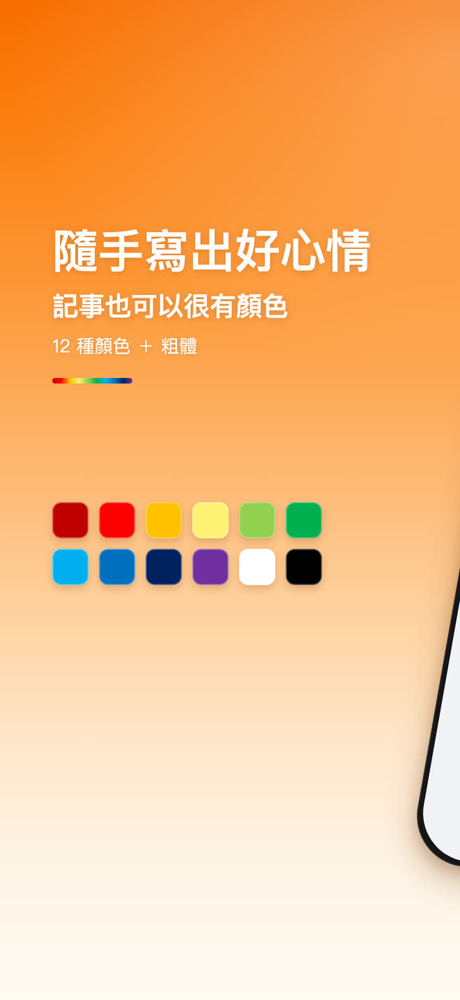
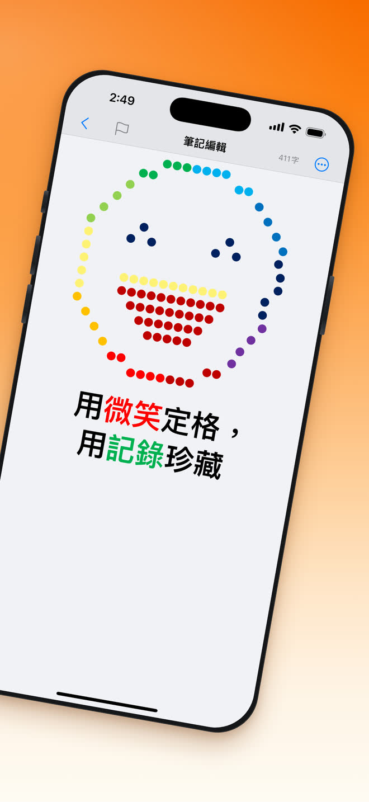

打開就能寫
不註冊、不用學、不用設定。打開 App，游標已經在那裡等你了。
免費 · iPhone · 30 種語言
越簡單，越有效率。極簡備忘是一款打開就能寫、完全免費的記事便條工具，隨時隨地都能記。
分享
顏色
筆記不必只有黑白。12 種標準色加粗體，就在編輯工具列上，不用翻選單；而且會記住你上次用的那個顏色。
12 種顏色 + 粗體
用微笑定格，
用記錄珍藏。


它能做什麼
沒有儀表板，沒有新手導覽，沒有要整理的資料夾。只留下記事本真正會用到的那幾樣。
不註冊、不用學、不用設定。打開 App，游標已經在那裡等你了。
一整套標準色和粗體，打字的時候一點就用。
輸入關鍵字，清單立刻篩選。不用建資料夾，也不用貼標籤。
自動跟隨系統外觀。半夜記下的那則筆記，看起來就該是它本來的樣子。
獨立的復原與重做按鈕，標題列即時顯示目前字數。
筆記存在本機資料庫，寫入時經過加密，內容不會上傳到伺服器。
整個介面可以跟隨系統語言，也可以在設定裡單獨指定一種。
透過 iOS 系統分享面板，把任何一則筆記傳到郵件、訊息或任何已安裝的 App。
搜尋
輸入關鍵字，筆記清單即時篩選。不用建資料夾、不用貼標籤、不用花時間整理 —— 要找的那一則自己會浮上來。

深色模式
極簡備忘自動跟隨系統外觀。把 iPhone 切到深色模式，筆記也跟著切，同樣的那幾種字體顏色在深色背景下依然清楚。

常見問題
是。下載和使用都不收費，寫筆記相關的功能也沒有需要付費解鎖的部分。
不需要。沒有註冊也沒有登入，打開 App 點一下就能寫下第一則。
iPhone，系統需要 iOS 16.0 或更新版本。
存在你自己的 iPhone 上，寫入時經過加密。筆記內容不會上傳到伺服器。
可以。編輯工具列上有 12 種標準色和粗體，而且會記住你上次用過的顏色。
極簡備忘內建 30 種語言，可以跟隨系統語言，也可以在設定裡單獨指定。